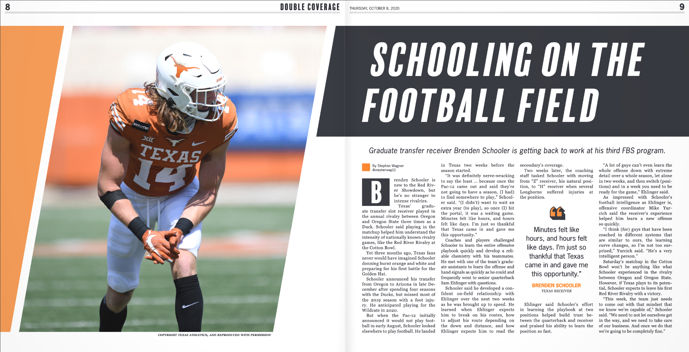

My Portfolio Website. (In Progress)
- Developed this website from scratch alongside reading Jon Duckett's HTML & CSS: Design and Build Websites and watching a variety of Pluralsight's website tutorial videos.
- Practiced using git commands and making commits with a repository on GitLab.
- To-do:
- Implement responsive media queries with CSS to accommodate different screen sizes.
- Tools used:
- HTML
- CSS
- Adobe Illustrator
Click to see the project on GitLab

Daily Texan Double Coverage Tabloid
- Independently manage the design of The Daily Texan's 12-page Double Coverage tabloid issues.
- Styled the paper by setting the color palette, designing header graphics and creating a library of page layout elements in Adobe InDesign.
- Work closely with a small team of copy, sports and photo editors to meet a weekly deadline.
- Trained two issue designers, manage their workload and assist them as needed.
- Tools used:
- Adobe InDesign
- Adobe Illustrator